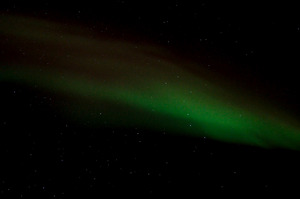

Ha északi fényt (aurora borealis-t) szeretnénk fényképezni, akkor először is a helyet és az időt kell kiválasztani.
Hely
Bár elsőre logikusnak tűnhet, hogy a lehető legészakibb helyet
keressük, valójában azért (szerencsére) nem az északi sark a
legmegfelelőbb hely az északi fény megfigyeléséhez. Az auróra-zóna
ennél délebbre van: Izland, Észak-Skandinávia az ideális
hely. Nem túl meglepő módon errefelé elég sok a lakatlan terület,
ha olyan helyet keresünk ahová repülővel el lehet jutni, ahol
találunk szállást, eléggé
leszűkülnek a lehetőségeink. Én Tromsøt választottam Norvégiában.
Időpont
Legfontosabb az erős naptevékenység. Bár itt megfigyelhető egy 11 éves ciklus, de a valóságban azért elég pontatlanul lehet előrejelezni azt, hogy mennyi esélyünk van az aurórára. Néhány napos előrejelzést találunk itt.
Fontos még a tiszta égbolt, hiszen felhős időben nem sokat látunk.
Ha eléggé északra megyünk, akkor érdemes a napfelkelte, napnyugta időpontját alaposan ellenőrizni. Például júniusban egyáltalán nincsen sötét éjszaka, ami több mint kellemetlen ha északi fényt szeretnénk nézni. A decemberi teljes sötétség jobbnak tűnik, de ha más programunk is van, akkor zavaró lehet
Ha gyenge az auróra, akkor a Hold (különösen a telihold) fénye
egyszerűen elnyomhatja.
Ezeken az északi területeken a fakultatív programok jelentős része a hóhoz kapcsolódik, érdemes olyankor menni amikor sok hó van. Egy igen jó weboldalon lehet megnézni a korábbi évek adatait és ez alapján meg lehet tippelni mikor mennyi hó lesz.
Nyilvánvalóan teljesen reménytelen a fenti összes feltételnek
megfelelni, főleg több hónapra előre. Márpedig a repülőjegyet,
szállást érdemes előre lefoglalni. Több helyen azt javasolták,
érdemes nemcsak a sarki fény megnézése köré szervezni az utat, így
ha valamiért arról lemaradunk, akkor sem veszik kárba az egész út.
Észlelés
Bár elvileg nem kell szervezett túra ahhoz, hogy megfigyeljük az
északi fényt, szerintem sok előnye van egy ilyen csapatnak. Nem
véletlenül szervez több cég is ilyen túrákat, én
a triadvisoron
kerestem ilyent. Általánosságban igaz, hogy minél kisebb csapattal
szeretnénk menni, annál drágább a túra.
Több helyen is megálltunk, de a legtöbb fényképet
Grunnfjord
mellett készítettem.
Az összes utazási iroda leírja pontosan, hogy öltözzünk fel
rendesen, tényleg igen hideg lehet Észak-Norvégiában éjjel. Némelyik
ad speciális ruhát is.
A ruha leginkább kérdéses része a kesztyű. Van persze meleg
kesztyűm, de abban nem tudom kezelni a fényképezőgépet, így kesztyű
nélkül fényképeztem. A felkészültebb emberek általában valami
vékonyabb kesztyűt hordanak amiben tudják a gépet kezelni, és arra
húznak egy vastag kesztyűt is.
Zseblámpát (fejlámpát) mindenképpen kell vinni, ha nem akarunk
orra bukni.
Fényképezés - felszerelés
Igen kevés fényben kell fényképezni, ezt figyelembe véve kell a
felszerelést összeállítani.
Állvány mindenképpen kell. Én egy
Manfrotto 209-es igen kicsi állványt használtam 482 mikro
gömbfejjel. Egy nagyobb állvány nyilván kényelmesebb lett volna,
nem volt túlzottan jó folyamatosan a hideg földön térdepelni.
Pentax K-x tükörreflexes gépet használtam. (Akinek van, az inkább
full-frame gépet vigyen, nagyon kevés fényben kell fényképezni,
minél nagyobb az érzékelő, annál jobb.)
Nagylátószögű objektívet érdemes használni, én Sigma 10-20mm
f/4-5.6-et használtam, az esetek többségében 10mm körüli
fókusztávolsággal.
Fényképezés - beállítások
Autofókuszra semmi szükség, manuálisan állítottam be az élességet
(lényegében végtelenre).
RAW módban fényképeztem
2 másodperces késleltetést állíottam be, hogy kevésbé mozduljon
be a kép.
Többnyire 10mm-es fókusztávolságot használtam.
Mivel a fény igen kevés, a legnagyobb rekeszt (legkisebb
rekeszértéket) használtam, az objektíven ez F4 volt.
Az 500-as
szabály (van ahol 600-as szabálynak hívják) alapján 30 másodperc alatt még épp nem mozdulnak be a
csillagok (500/10/1.5 = 33.3). Ez nekem is
így tűnt (ha nem rúgtam bele az állványba). Többnyire 10-15 másodperces időt
használtam. A rövidebb időknél nem volt elég fény még magas ISO
értéket beállítva sem, hosszabb időknél pedig már többnyire
nagyon elmosódott volt a sarki fény.
A kevés fény miatt ISO értéknek ISO 2500 - ISO 4000 közti
beállítást használtam.
A fenti beállításokhoz persze nem ragaszkodtam nagyon
szigorúan. Mivel volt elég sok idő, mindenféle rekesz, idő, ISO
értékekkel készítettem felvételeket, de a fenti értékekkel
sikerültek legjobban a képek.
Fényképezés - kompozíció
Érdemes nem egyszerűen csak az eget lefényképezni, mert túl
unalmas lesz a kép. A következő képek például pont a fejünk feletti
fényt mutatják (ami élőben igen szép volt), de ez nem igazán jön át a képeken:
11mm f/5.6 15s ISO400010mm f/4 15s ISO3200
Mivel vízparton voltunk, a legegyszerűbb az volt, ha a háttérben a
víz, a túloldal hegyei, esetleg a távolban lévő település fényei
látszanak:
10mm f/4 10s ISO640010mm f/4 10s ISO250010mm f/5.6 30s ISO400011mm f/5.6 15s ISO640010mm f/4 13s ISO640010mm f/4 20s ISO6400
A képek még szebbek lehetnek, ha úgy választunk észlelési helyet,
hogy az előtér is nagyon szép legyen. Szervezett túránál persze elég kevés
lehetőségünk van egyénileg választani helyet.
Az útitársak többnyire csak zavaróak a képben (különösen nagyszerű
az, aki bekapcsolt fejlámpával végigsétál a 20 másodperces expozíció
alatt, sok ilyen képem van), de néha érdekessé teszik a képeket. Itt az igazsághoz
hozzátartozik, hogy nálam tényleg csak véletlenül vannak a képben a
többiek, egyszerűen útban voltak:
10mm f/4 15s ISO320011mm f/5.6 10s ISO400010mm f/4 15s ISO3200
Az egyik legtipikusabb kép az amikor egy boldogan mosolygó ember
hátterében látszódik a sarki fény, de ilyent én nem
készítettem:
A Sigma 10-20 nem igazán nevezhető portréobjektívnek, ehhez a
képhez kevésbé nagylátószögű objektív kellene.
A hosszú expozíciós idő miatt derítő vakuzás kellene, lehetőleg
külön vakuval.
A fényvisszaverő mellény a lehető legrosszabb öltözék amit viselni
lehet egy ilyen képhez.
Nagyobb állvány is kellett volna, mert nem jó alulról embert fényképezni.
Fényképezés - utófeldolgozás
Felmerül a kérdés, hogy mit kell, illetve mit illik módosítani a
képeken. Általában igyekszem a képeken a lehető legkevesebbet
módosítani, és a célom többnyire az, hogy a lehető legjobban
hasonlítson a kép arra amit a szabad szememmel láttam. A gond az,
hogy a sarki fény általában sokkal szebb a fényképeken akkor is, ha
nem manipuláljuk a képeket.
Élőben volt olyan, amikor csak nagyon-nagyon halvány derengést
láttunk, a fényképen viszont látszott a sarki fény. A túravezető
szerint gyakran nem igazán tudják szabad szemmel megállapítani,
hogy sarki fényt látnak, vagy a városi fény derengését. Le kell
fényképezni, és ha zöldes, akkor sarki fény:
10mm f/4 13s ISO400012mm f/4.5 20s ISO4000
Itt
van egy részletesebb elemzés ennek az okáról, ha valakit jobban érdekel.
Általában a következőket módosítottam a képeken:
Színhőmérsékletet igyekeztem úgy beállítani, hogy a csillagok
színe fehér legyen, az égnek azon része ahol nem látszik a sarki
fény pedig fekete. Képenként állítottam az értékeket, többnyire
fehéregyensúlynak 4500K-at, tintnek 40-et beállítva.
Kontrasztot növeltem, mert általában túl halvány volt a sarki
fény


{kind=link}
{kind=link}
{kind=link}
{kind=link}
{kind=link}
{kind=link}
{kind=link}